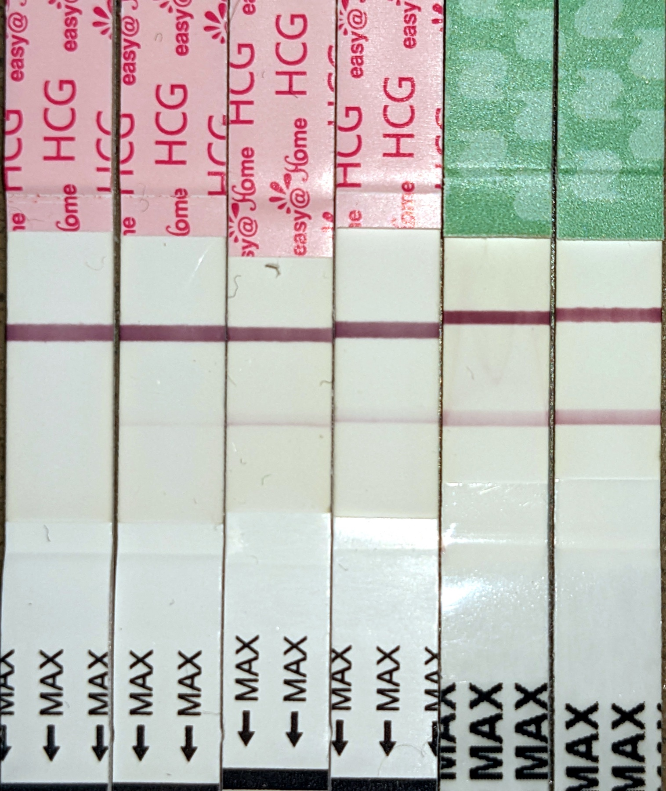

Página 8 · Parte E · hCG
hCG: por que o pico é cedo e por que isso importa para a conduta
O TIG urinário (fita), o beta-hCG sérico (número), o pico entre 8 e 10 semanas e a função de sustentar o corpo lúteo até a placenta assumir por volta de 12. Quatro peças, uma só molécula.
TIG urinário: as três leituras da fita
Na prática, diante de atraso e/ou sintomas sugestivos, o caminho é exame laboratorial de hCG — não esperar certeza clínica tardia. hCG na urina = TIG (teste imunológico de gravidez) — o “teste de farmácia”.
Leitura da fita:
- Uma faixa de controle valida o teste; segunda faixa = positivo.
- Nenhuma faixa = teste inválido — não interpretar como negativo.
- Só a faixa de controle = negativo.
- Controle + teste = positivo.
(Na vida real, a fita mostra a progressão temporal do hCG urinário: negativo inicial → linha de teste fraca → positivo pleno. Por isso a série de fitas dia-a-dia é o objeto didático honesto — três estados fixos “rotulados” raramente vêm numa única foto.)
Beta no sangue: a fração que dá número
hCG no sangue (laboratório) permite a fração beta (beta-hCG), mais específica — e é o que permite número e série temporal. O número é o que se compara com os limiares de saco gestacional no US e o que se usa na regra de ouro de duplicação em 48 h (próxima página).
Pico 8–10 sem — e por que não sobe para sempre
O hCG faz pico entre ~8 e 10 semanas — não sobe indefinidamente. Por volta de ~12 semanas, a placenta já assumiu a produção endócrina e o suporte do corpo lúteo deixa de ser o centro. Por isso o pico de hCG é precoce — não acompanha a gestação inteira.
(A macete de prova: “o hCG conta só o 1º trimestre” — depois é a placenta que fala. A frase oposta (“o hCG sobe até o final”) é a pegadinha da banca.)
hCG resgata o corpo lúteo (link A9) até a placenta ~12
[LINK-FORWARD A9] Função do hCG no início: sustentar o corpo lúteo para manter estrogênio e progesterona e a gestação. Fisiologia completa do ciclo / corpo lúteo = A9 — linkar, não reabrir. Sem hCG, o corpo lúteo regride, o endométrio descama e o ciclo reinicia.

A fotografia mostra a progressão temporal do hCG urinário: a linha de teste aparece fraca primeiro e se firma com o passar dos dias. Caption honesta: a série não é o trio “inválido / negativo / positivo” rotulado por marca — é a realidade clínica do que se vê na farmácia.
Pregnancy test series starting to show positive. Photo: Grendelkhan, 2022. Licensed under CC BY-SA 4.0. Source: https://commons.wikimedia.org/wiki/File:Pregnancy_test_series_starting_to_show_positive.jpg
Quiz — fixação
Fita TIG sem nenhuma faixa:
- Gabarito C. Sem faixa de controle, a fita não tem leitura válida. Tratar como inválido e refazer o teste.
- (A) confundir “sem controle” com “ausência de gestação” — o controle é o que diz se o teste funcionou.
- (B) “fraco” não existe na leitura do TIG: a linha de teste, mesmo fraca, é positivo.
- (D) mapeamento sem sentido — beta é número sérico, fita é qualitativo urinário.
- Por que cair na A: interpretação leiga: “não apareceu nada = não está grávida”. O controle diz se o teste rodou.
O pico de hCG ocorre aproximadamente em:
- Gabarito B. Pico entre ~8 e 10 semanas. O hCG declina depois que a placenta assume por volta de 12 sem.
- (A) 4 sem é a faixa do saco gestacional no US, não do pico de hCG.
- (C) 18–20 sem é a faixa de Pinard / MF pelo médico, não do hCG.
- (D) a placenta assume no 1ºT/2ºT — depois dela, o hCG cai.
- Por que cair na D: inverter a curva: hCG sobe até a placenta assumir e desce depois — não sobe até o 3ºT.